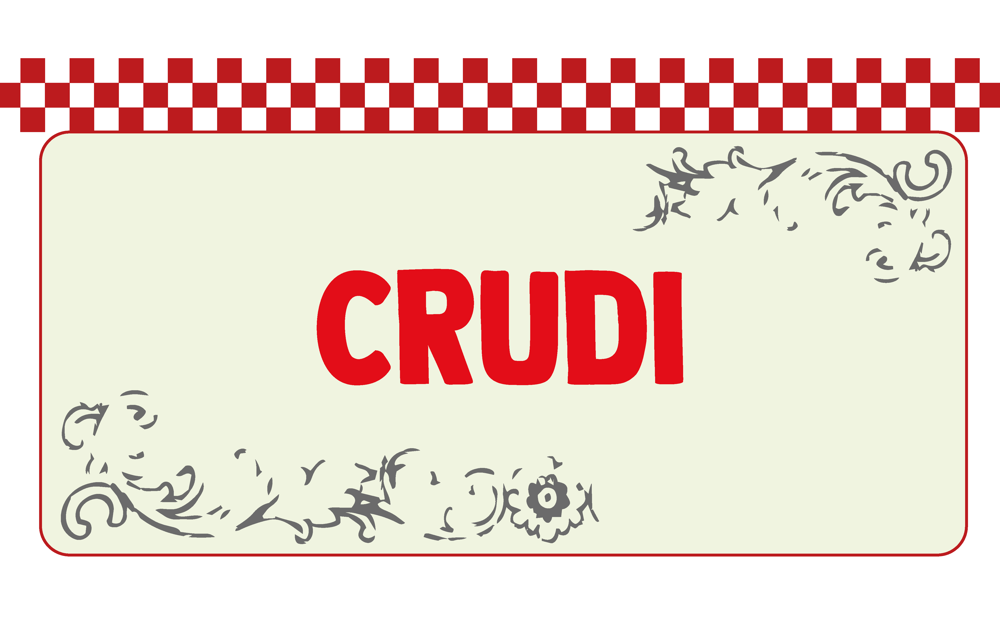
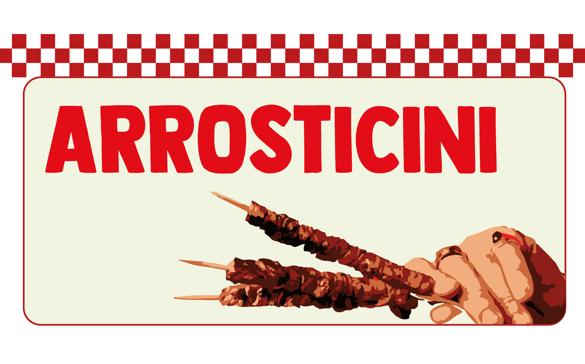
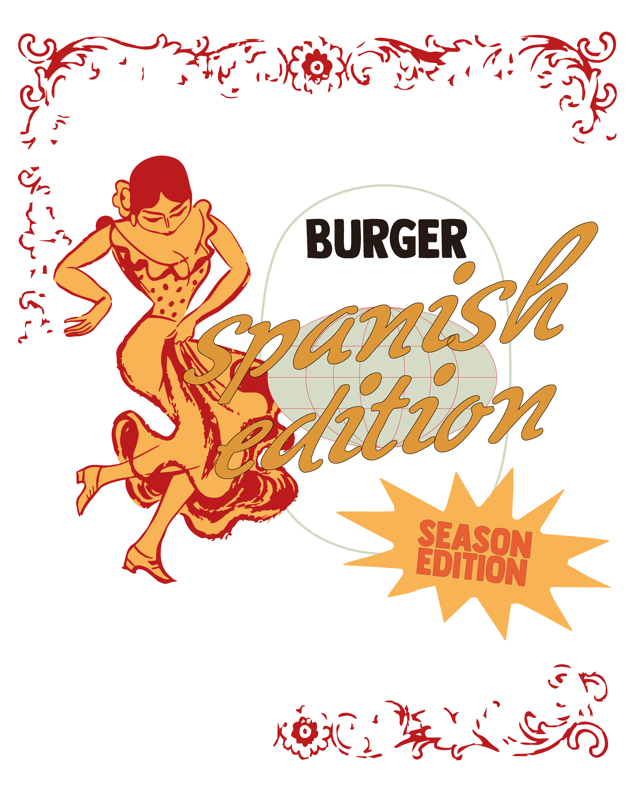
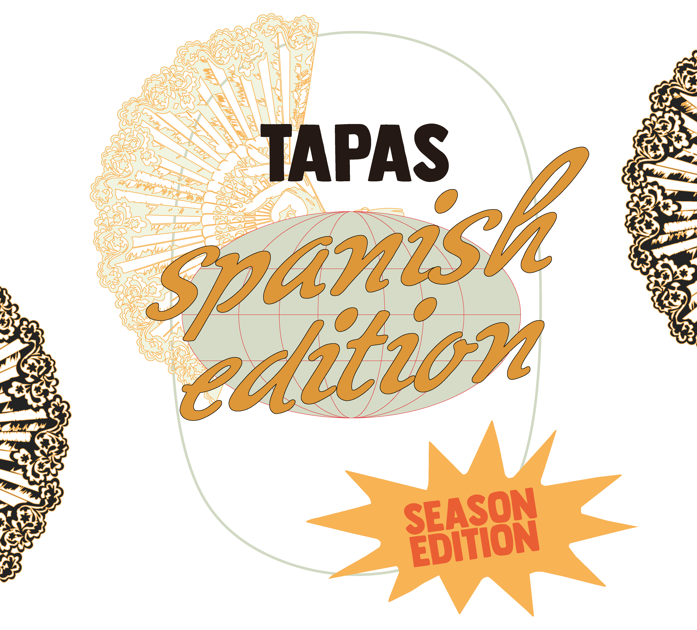

Da Corato alla ricerca dei sapori più inaspettati da ogni angolo del mondo,
in un viaggio di scoperta senza fine.
Dove vuoi, con chi vuoi, tutte le volte che vuoi.
Tobeer Fried Chicken con panatura classica e pepe Sichuan
5pz / Allergeni (1,3,6)
8.90
Tobeer Fried Chicken, marinatura al jalapeño e soia, panatura al panko
5pz / Allergeni (1,6)
8.90
Allergeni (1 )
4.50
Allergeni (1 )
5.50
Involtini fritti di verdure saltate al wok
Allergeni (1,6)
6

con midollo alla brace, salsa olandese
Allergeni (3,6,7)
13.90
con finocchietto selvatico,
Parmigiano Reggiano 30 mesi
Allergeni (3,6,7)
13.90
chorizo, cecina de León,
jamón ibérico, panceta de Bellota,
queso a latte crudo,
queso a latte crudo con jamón
Allergeni (1,7)
25

→ min 6 pz
1.30 al pz
1.30 al pz
1.30 al pz
Burger di manzo o maiale Tigrinto, cheddar, cetriolini sottaceto,
cipolla, Tobeer smash sauce
Allergeni (1,3,6,7)
13.90
Smash di cavallo, chimichurri, canestrato al peperoncino
Allergeni (1,3,7)
13.90

Burger veg, crema di verdure affumicate,
basilico, queso spagnolo a latte crudo
Allergeni (1,3,7)
Ispirato alla cucina della Navarra, celebre per verdure d’eccellenza e sapori semplici, ma autentici.
13.90
Salsa Brava, spinacino, chorizo
Allergeni (1,3,7)
Ispirato alla cucina contadina della Rioja, terra di grandi vini, patate e chorizo tradizionale.
13.90
Panceta de Bellota, mayo al pepe Sichuan,
Pecorino Romano
Allergeni (1,3,7)
Omaggio alla tradizione gastronomica del Sud della Spagna, tra jamón iberico e panceta de Bellota.
13.90
Smash di maiale Tigrinto, finocchietto,
alici spagnole, salsa al peperone bruciato
Allergeni (1,3,4,7)
Richiama la tradizione pastorale dell’Estremadura, reinterpretando i sapori intensi del maiale iberico.
13.90
Gazpacho, rucola selvatica,
queso a latte crudo con jamón
Allergeni (1,3,7)
Ispirato all'omonimo ristorante di Madrid, dove influenze asiatiche, spagnole e latino-americane si fondono creativamente.
13.90

Allergeni (3,7)
6
Allergeni (1,3,7)
5
Allergeni (1,3,7)
5.50
Allergeni (4 )
6
Non un semplice barbecue, ma il Josper: il forno a carbone che incarna un metodo di cottura primordiale e che domina il fuoco.
Qui al Tobeer lo sperimentiamo insieme all'affumicatura per donare alla carne un sapore nuovo e più intenso.
Tutte le carni vengono servite con contorni.
LASCIATI CONSIGLIARE DAL PERSONALE DI SALA
7 / etto
7 / etto
5 / etto
4.5 / etto
8 / etto
6 / etto
6 / etto
5 / etto
Chiedi disponibilità al personale di sala
GLUTINE
Cereali contenenti glutine, cioè: grano, segale, orzo, avena, farro,
kamut o i loro ceppi ibridati e prodotti derivati, tranne:
a) sciroppi di glucosio a base di grano, incluso destrosio;
b) maltodestrine a base di grano;
c) sciroppi di glucosio a base di orzo;
d) cereali utilizzati per la fabbricazione di distillati alcolici,
incluso l'alcol etilico di origine agricola.
CROSTACEI
Crostacei e prodotti a base di crostacei.
UOVA
Uova e prodotti a base di uova.
(Sono comprese le uova di tutte le specie di animali ovipari).
PESCE
Pesce e prodotti a base di pesce, tranne:
a) gelatina di pesce utilizzata come supporto
per preparati di vitamine o carotenoidi;
b) gelatina o colla di pesce utilizzata
come chiarificante nella birra e nel vino.
ARACHIDI
Arachidi e prodotti a base di arachidi.
SOIA
Soia e prodotti a base di soia, tranne:
a) olio e grasso di soia raffinato;
b) tocoferoli misti naturali (E306),
tocoferolo D-alfa naturale,
tocoferolo acetato D-alfa naturale,
tocoferolo succinato D-alfa naturale a base di soia;
c) oli vegetali derivati da fitosteroli
e fitosteroli esteri a base di soia;
d) estere di stanolo vegetale prodotto
da steroli di olio vegetale a base di soia.
LATTE
Latte e prodotti a base di latte (incluso lattosio), tranne:
a) siero di latte utilizzato per la fabbricazione
di distillati alcolici, incluso l'alcol etilico di origine agricola;
b) lattiolo.
(Sono compresi latte bovino, caprino,
ovino, e ogni tipo di prodotto da essi derivato.)
SEDANO
Sedano e prodotti a base di sedano.
SENAPE
Senape e prodotti a base di senape.
ANIDRIDE SOLFOROSA
Anidride solforosa e solfiti
in concentrazioni superiori a 10 mg/kg
o 10 mg/litro in termini di SO2 totale
da calcolarsi per i prodotti così come proposti
pronti al consumo o ricostituiti conformemente
alle istruzioni dei fabbricanti.
SESAMO
Semi di sesamo e prodotti a base di semi di sesamo.
LUPINI
Lupini e prodotti a base di lupini.
FRUTTA A GUSCIO
Frutta a guscio, vale a dire: mandorle (Amygdalus communis L.),
nocciole (Corylus avellana), noci (Juglans regia),
noci di acagiù (Anacardium occidentale), noci di pecan [Carya illinoinensis (Wangenh.) K. Koch], noci del Brasile (Bertholletia excelsa),
pistacchi (Pistacia vera), noci macadamia o noci del Queensland (Macadamia ternifolia), e i loro prodotti,
tranne per la frutta a guscio utilizzata per la fabbricazione di distillati alcolici, incluso l’alcol etilico di origine agricola.
MOLLUSCHI
Molluschi e prodotti a base di molluschi.